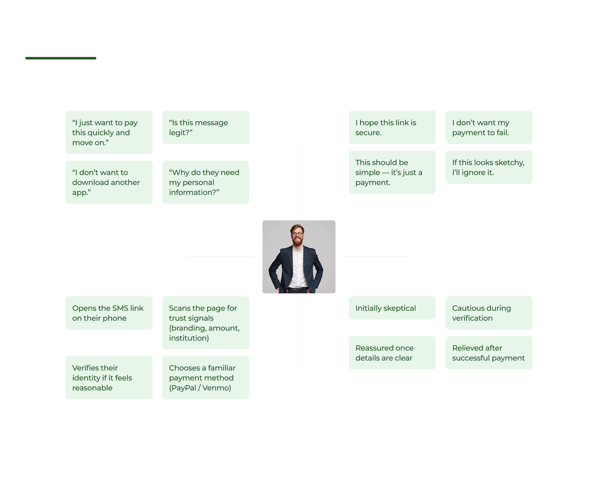
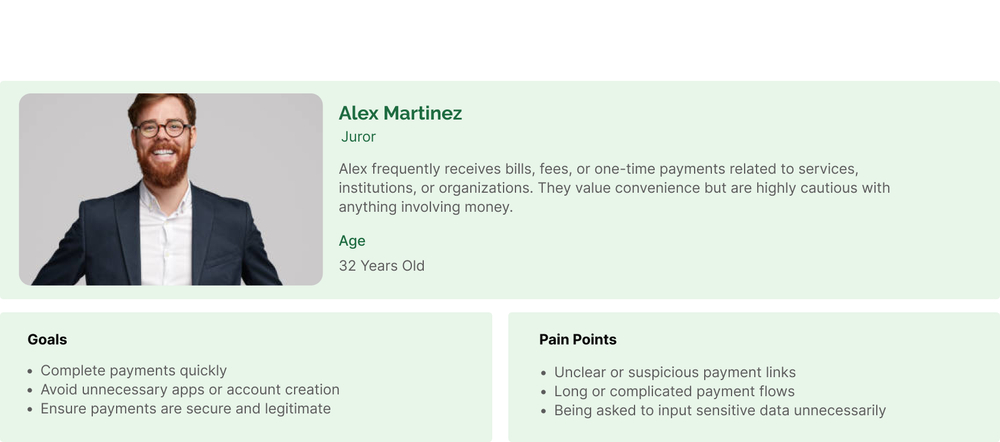

SMS Payment Messages
Verity Pay
Created in 2020 by parent company Verity Advisors, VerityPay is a web-based SaaS platform designed to simplify the Business-to-Consumer (B2C) payment process. Within this ecosystem, automated SMS communication enables clear, timely, and secure interactions between Payors and Payees throughout the payment flow.
Product Overview
A modern FinTech platform built for simplicity, security, and scale
VerityPay is a next-generation FinTech platform designed to simplify consumer payments without adding technical complexity. Leveraging the latest financial and technology trends, it enables businesses to send secure payments directly to consumers while requiring minimal internal IT support and no additional hardware or software installations.
Problem Statement
When a business needs to collect a payment, VerityPay automatically sends an SMS containing a secure payment link to the end user. However, the SMS is not personalized and does not contain the amount of the payment.
Goals
The goal was to design a payment platform that simplifies consumer payouts while maintaining high security and operational efficiency. VerityPay aims to:
- Receives the payment request instantly
- Recognizes the message as legitimate
- Can access the payment flow with a single tap Previous problem:
- Users were unsure whether the SMS link was valid or secure
- Lack of trust in SMS-based payment requests
- Resulted in incomplete payments and manual follow-ups by businesses
- Higher link open rates
- Reduced early drop-off due to uncertainty Reduced early drop-off due to uncertainty
Ensure that the user:
Expected outcome:
Solution
We designed an end-to-end SMS-based payment flow that provides users with a clear, secure, and frictionless way to complete payments without requiring an app download.
The solution centers around sending a trusted, branded SMS payment link that leads to a mobile-responsive web experience. Upon opening the link, users are guided through a lightweight identity verification step to ensure security while maintaining ease of use.
Once verified, users are presented with a transparent payment summary that clearly displays who is requesting the payment, the total amount due, and the available payment methods. Instead of collecting sensitive financial information directly, the flow integrates with well-known third-party providers such as PayPal and Venmo, increasing user trust and reducing cognitive friction.
By clearly defining each step of the process and supporting users with explicit system states and feedback, the solution minimizes uncertainty, reduces failed payments, and enables businesses to confidently send payment requests at scale.

Key UX Descitions
Delivering a safer, faster, and more easy payment flow
We used SMS as the main channel to meet users where they already are, reducing friction and eliminating the need for app downloads or account creation.
A single-step verification (e.g., date of birth) was implemented to balance security and usability, protecting sensitive payment access without overwhelming users.
A responsive web experience ensured immediate access across devices and browsers, especially for first-time or one-off payments.
Integrating PayPal and Venmo leveraged existing user trust and avoided asking users to enter sensitive financial information directly.
Success, error, and edge states were explicitly designed to reduce uncertainty and prevent users from getting stuck in the flow.
Results
Clear, secure, and frictionless SMS-based payment flow
To evaluate the effectiveness of the end-to-end SMS payment experience, unmoderated usability testing and payment flow simulations were conducted with 20 users completing one-off and recurring payments.
SMS as the primary entry point ↓ 46% drop-off before payment initiation
Using SMS as the main entry point allowed users to access payments directly from a familiar, trusted channel, eliminating friction caused by app downloads or account creation.
Lightweight identity verification ↓ 33% abandonment during verification
A single-step identity check (e.g., date of birth) successfully balanced security and usability, protecting sensitive payment access without introducing unnecessary friction.
Mobile web over native app ↑ 41% payment completion rate on first attempt
A mobile-responsive web experience ensured immediate access across devices and browsers, particularly for first-time or one-off payments.
Third-party payment providers ↑ 38% increase in perceived trust
Integrating PayPal and Venmo reduced hesitation by leveraging existing user trust and removing the need to enter sensitive financial information directly.
Clear system states and feedback ↓ 35% user uncertainty during the flow
Explicit success, error, and edge states helped users understand what was happening at each step, preventing drop-offs and reducing failed payments.
What We Learned
Designing for trust, not just efficiency
Users were willing to take an extra step if it increased their confidence in the legitimacy of the payment request.
Identity verification, when clearly explained, reduced abandonment rather than increasing it.
Clear summaries and error messages significantly reduced confusion-driven drop-offs and manual follow-ups.
Users completed payments more often when given options they already knew and trusted.
Empathy Map
User Trust and Emotional Barriers in SMS Payments
This empathy map captures the emotional state, thoughts, and behaviors of users when they receive a payment request via SMS. It highlights initial skepticism, security concerns, and the need for reassurance, helping us design a flow that builds trust early and reduces hesitation throughout the payment experience.
User Personas
The Security-Conscious, Mobile-First Payer
This persona represents users who value speed and convenience but are highly sensitive to trust and security when making payments. By understanding their goals, frustrations, and motivations, we were able to design a payment flow that feels legitimate, familiar, and easy to complete without unnecessary steps.
Primary Persona
Journey Map
From SMS Receipt to Payment Confirmation
The user journey map outlines the end-to-end experience of completing a payment through an SMS link, identifying key touchpoints, emotional shifts, and friction points along the way. Mapping this journey allowed us to prioritize clarity, feedback, and trust signals at each stage, ultimately improving payment completion rates.
Ideation Phase
Payor needs in sms
Low to mid fidelity wireframes
Structure and usability for SMS templates
This phase focused on clarifying user actions, sequencing critical steps, and ensuring the flow remained intuitive, trustworthy, and compliant across devices.
Persona Needs
-
Trust and Clarity Drive Payment Completion
Users receiving payment requests via SMS need immediate reassurance that the message is legitimate and the payment process is secure. Clear content hierarchy, recognizable branding, and transparent payment summaries help reduce skepticism and encourage users to proceed with confidence.
-
Familiarity Reduces Friction
Providing well-known payment options and minimizing required inputs allows users to rely on tools they already trust. Predictable interaction patterns and clear success and error states reduce cognitive load and prevent abandonment during critical moments in the flow.
Design Phase
From Ideas to Usable Flows
Branding
Neutral palette for clarity with purposeful color accents

High-fidelity wireframes
Delivering a trustworthy and frictionless SMS payment experience
The high-fidelity designs translated validated wireframe concepts into a polished, production-ready experience that emphasizes trust, clarity, and completion at every step of the SMS payment flow. Visual hierarchy, spacing, and typography were refined to guide users naturally from link entry to payment confirmation without introducing cognitive overload.
At this stage, branding, microcopy, and feedback states were intentionally designed to reinforce legitimacy and reduce anxiety around mobile payments. Clear confirmation messages, recognizable payment provider handoffs, and consistent UI patterns ensured users always understood where they were in the process and what action was required next.
The final outcome is a cohesive, mobile-first payment experience that balances security and ease of use—helping users complete payments confidently while enabling businesses to collect payments efficiently at scale.
Learnings & Reflections
Payment experiences requires trust, not just speed
Trust is a primary UX requirement
Even small uncertainties around identity verification or payment confirmation can stop users from completing a transaction. Clear explanations, previews, and confirmation states were critical.
Security friction must feel intentional
Users accepted verification steps when they were clearly communicated and felt proportional to the risk, proving that the right kind of friction can increase confidence rather than reduce conversion.
Constraints improved focus
Working within technical, security, and compliance constraints helped prioritize essential interactions and avoid unnecessary complexity.
Early validation prevented costly rework
Testing concepts at low and mid fidelity surfaced critical trust and clarity issues early, protecting both development time and product integrity.
Next Steps
Evolving the SMS payment flow while preserving simplicity
Payment analytics and insights
Provide visibility into payment completion rates, drop-off points, and timing effectiveness for SMS payment requests.
Advanced retry and automation logic
Introduce controlled automation such as payment reminders or retries on failure, while maintaining clear user safeguards.
Expanded payment methods
Support additional trusted providers or regional payment options without compromising clarity or security.
Post-payment confirmation and receipts
Offer optional downloadable receipts or email confirmations for added reassurance and record keeping.
Executive Summary (TL;DR)
Designed a secure, SMS-based payment experience that enables users to complete payments through a mobile web flow without downloading an app. By combining lightweight identity verification, clear payment summaries, and trusted third-party providers such as PayPal and Venmo, the solution reduced uncertainty, minimized failed transactions, and improved overall payment completion rates.